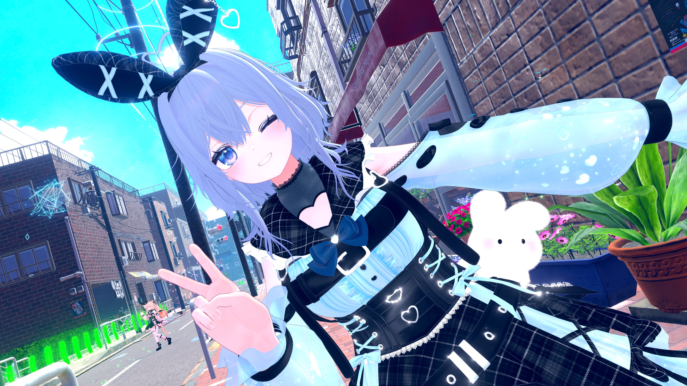
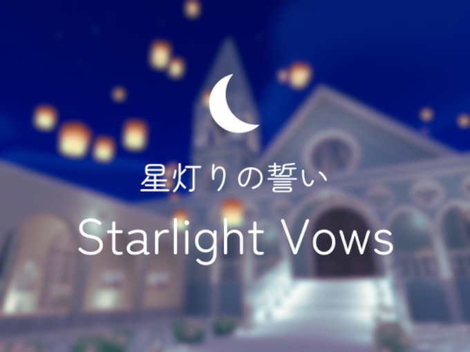
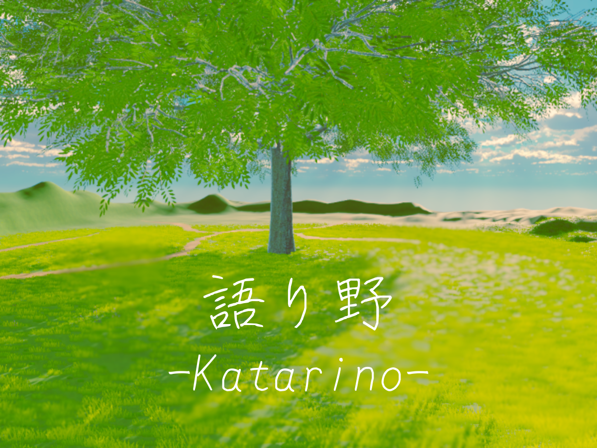

まっすたーって？

まっすたー
VRChatで、みんなとおしゃべりする参加型の雑談配信を毎日してるよ！(21:00-22:00)
好きなもの
- ノベルゲーム
- 音ゲー
- 読書
- かわいいもの
かわいいものがだーいすき！ VRChatで見かけたら気軽に声をかけてね！ (プログラミングは…ちょっと苦手かも？)
配信はこちら！
配信スケジュール
毎日 21:00 ～ 22:00 配信中！
まっすたーの作ったワールド

星灯りの誓い -Starlight Vows-
満天の星空とランタンが幻想的に舞う、海辺のウェディング会場。ロマンティックな雰囲気の中、大切な人との特別なひとときに。結婚式やイベントに最適です。
VRChatで遊びに行く

語り野 -Katarino-
風が草を揺らし、雲が流れる静かな野原にそびえる一本の巨樹。その木陰は道を求める者、語り合う者、思索の旅人──誰もをやさしく迎え、そっと声と思考を受け止める空間です。
VRChatで遊びに行くワールドはこれからも増えるかも…？
お知らせ
- 2025.11.26 - 新しいワールド、「週末の隠れ家」公開しました！
- 2025.11.03 - 新しいワールド、「lie-down」公開しました！
- 2025.08.30 - 新しいワールド、「Raindrop Hideout」公開しました！
- 2025.04.21 - 新しいワールド、「語り野 -Katarino-」公開しました！
- 2025.04.06 - 公式ホームページ公開しました！
- 2025.03.31 - 新しいワールド、「星灯りの誓い -Starlight Vows」公開しました！